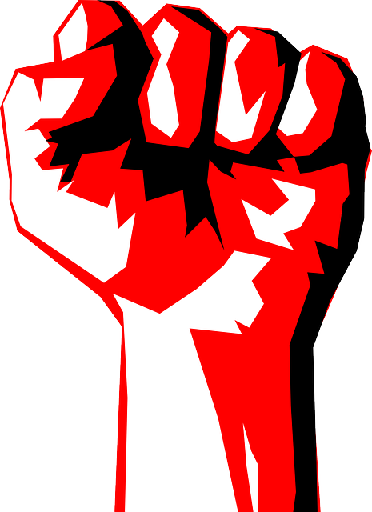

Introdução
Chega um momento em nossas vidas que percebemos que algo está errado, porque por um lado alguns poucos tem uma vida de luxo enquanto a maior parte das pessoas mal tem tempo para o lazer e a família? Porque a maioria de nós trabalha quase o dia inteiro a troco de um salário que muitas vezes mal da para as necessidades básicas e tem outros que podem se dar ao luxo de nunca trabalharem se quiserem e mesmo assim ter tudo?
O nome do causador dessa desigualdade cada dia mais crescente é capitalismo.
Temos duas escolhas, aceitar que a sociedade é assim e que chegamos no fim da história, ou entendermos os porquês e a partir dai nos organizarmos para não só mitigar as mazelas, mas construir uma sociedade nova livre da exploração do homem pelo homem onde todos possam viver com dignidade e desenvolver suas máximas potencialidades.
O caminho do socialismo rumo ao comunismo!
Nosso Propósito
Temos como proposta fornecer os caminhos para quem está começando nessa jornada do conhecimento que é entender a realidade além da aparência.
Indicaremos conteúdos para que você possa ter um norte nesse vasto campo que é o marxismo.
- Livros: Por quais começar?
- Videos e Podcasts.
- Cursos: Gratuítos e Pagos.
- Respondendo dúvidas.